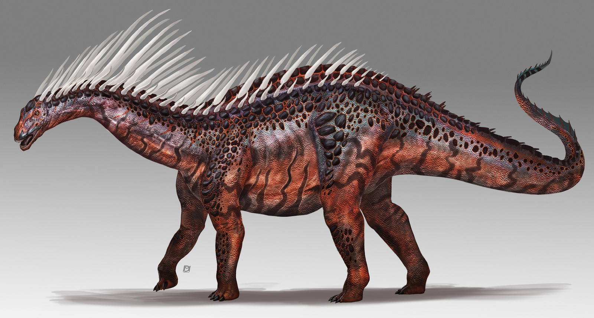
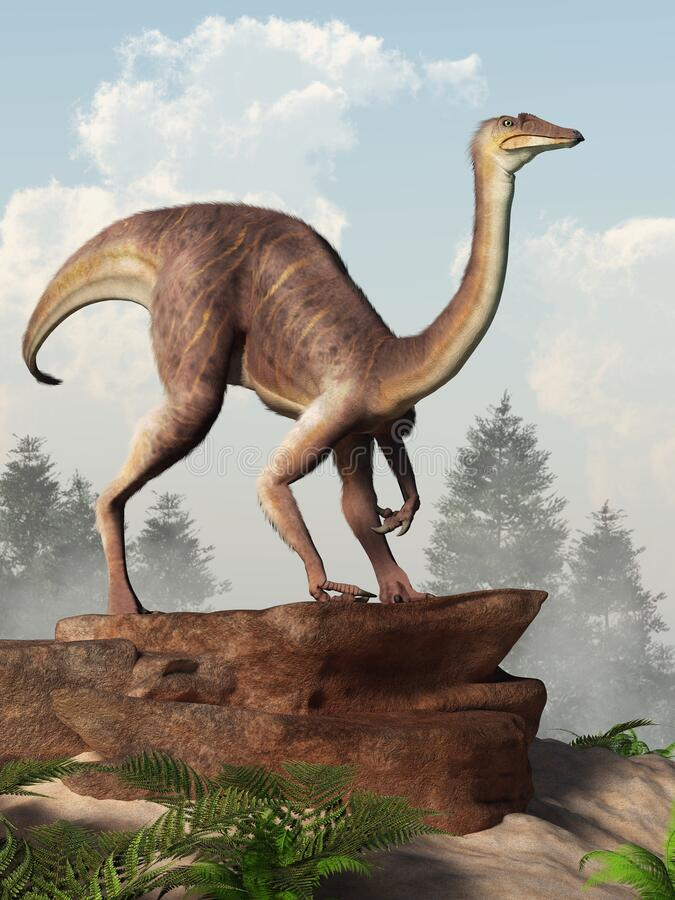
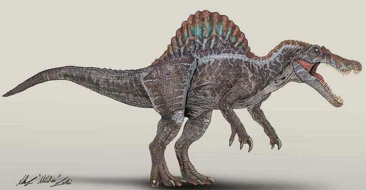

Dinosaurios
Alosaurio
Allosaurus (gr. "lagarto extraño") es un género extinto con cuatro especies válidas y varias otras posibles de dinosaurios terópodos alosáuridos, que vivieron a finales del período Jurásico, hace aproximadamente 161,2 y 145 millones de años, entre el Oxfordiense y el Titoniense, en lo que hoy es Norteamérica y Europa.1 Se han descrito varias especies, el número de especies válidas es dudoso y depende del autor. La más conocida y la especie tipo es Allosaurus fragilis de Estados Unidos descrita en el siglo xix, luego de esta gran cantidad de especies e incluso géneros, que fueron propuestos por todo el globo sin que ninguna termine siendo totalmente aceptada. En 2006 en Portugal se describió Allosaurus europaeus, aunque solo fue separada tentativamente dada la localización geográfica y Allosaurus jimmadseni de EE. UU. y la tercera especie de este último país, Allosaurus lucasi, en 2014. Sin embargo, todas ellas han sido disputadas.2
Amargasaurus cazaui
Amargasaurus cazaui ("reptil de Amarga del Dr. Luis B. Cazau") es la única especie conocida del género extinto Amargasaurus de dinosaurio saurópodo dicreosáurido, que vivió a principios del período geológico Cretácico, hace aproximadamente 130 millones de años, en el Barremiense, en lo que hoy es Sudamérica. Amargasaurus se encuentra cercanamente emparentado con el más antiguo dinosaurio africano Dicraeosaurus. Al igual que este presenta grandes espinas neurales bífidas, aunque en Amargasaurus son de mayor tamaño. El esqueleto está casi completo, incluyendo un cráneo fragmentario, haciendo de Amargasaurus uno de los saurópodos más conocidos desde el Cretácico inferior. Era pequeño para un saurópodo, alcanzando 9 a 10 metros de longitud. Su principal característica eran dos filas paralelas de altas espinas en su cuello y la espalda, más alta que en cualquier otro saurópodo conocido. No está claro si estas espinas tenían velas de la piel o sobresalían del cuerpo como estructuras solitarias con una vaina de queratina. Podrían haber sido utilizado para la visualización, combate o defensa.
Diplodocus
Diplodocus o diplodoco es un género con tres especies conocidas de dinosaurios saurópodos diplodócidos, que vivieron a finales del período Jurásico, hace aproximadamente entre 155,7 y 145 millones de años, en el Kimmeridgiense y el Titoniense, en lo que hoy es Norteamérica.1 Los primeros fósiles fueron descubiertos en 1877 por S. W. Williston.
Vivió en lo que es hoy el oeste de Norteamérica durante el período Jurásico Superior. El Diplodocus es uno de los dinosaurios más comunes de la parte superior de la Formación Morrison, una secuencia de sedimentos marinos y aluvionales depositados hace aproximadamente 152 millones de años. La Formación Morrison muestra un ambiente dominado por gigantescos saurópodos como Camarasaurus, Barosaurus, Apatosaurus y Brachiosaurus, además del Diplodocus.2
El Diplodocus está entre los dinosaurios más fácilmente identificables, con su forma clásica, cuello y cola largos, y cuatro patas robustas. Durante muchos años, era el dinosaurio más grande conocido. Su gran tamaño pudo haber sido un impedimento para los depredadores Allosaurus y Ceratosaurus, cuyos restos se han encontrado en los mismos estratos, lo que sugiere que coexistieron con el Diplodocus.
Lambeosaurus
Lambeosaurus ("lagarto de Lambe") es un género con 2 especies válidas y posiblemente otra más dudosa conocidas de dinosaurios ornitisquios hadrosáuridos, que vivieron a finales del período Cretácico, hace aproximadamente 76 y 75 millones de años, en el Campaniense, en lo que hoy es Norteamérica. Este herbívoro que caminaba en posición cuadrúpeda, pero que podía erguirse en sus dos patas traseras es conocido por su cresta distintiva, en forma de hacha, cresta hueca. Varias especies posibles han sido nombradas a partir de restos de Alberta, Canadá, Montana, EE. UU., y Baja California, México, pero solamente las dos canadienses se reconocen como válidas.
Lambeosaurus fue tardíamente descrito en 1923 por William Parks, más de veinte años después de que el primer material fuera estudiado por Lawrence Lambe. El género ha tenido una complicada historia taxonómica, en parte por los pequeños dinosaurios con crestas hoy reconocidos como juveniles, pero que en su época se le dio su propio género o especie. Actualmente, varios cráneos asignados a la especie tipo Lambeosaurus lambei se ven como ejemplos de diferencias de desarrollo y dimorfismo sexual. Lambeosaurus estaba estrechamente vinculado al más conocido Corythosaurus, que se encuentra en rocas levemente más antiguas, así como los géneros menos conocidos Hypacrosaurus y Olorotitan. Todos tenían crestas inusuales, que ahora se asumen generalmente para tener funciones sociales como exhibición y reconocimiento.
Protoceratops
Protoceratops (gr. "primera cara con cuernos") es un género de dinosaurios ceratopsianos protoceratópsidos que vivieron a finales del período Cretácico, hace aproximadamente 75 y 71 millones de años, durante el Campaniense, en lo que hoy es Asia. Su nombre proviene del griego πρωτο proto, "primero", κερατ, cerat, "cuernos" y ωψ, ops, "cara".1 Forma parte de la familia Protoceratopsidae, un grupo integrado por los primeros dinosaurios con cuernos. A diferencia de los ceratopsianos posteriores careció de cuernos bien desarrollados y conservó algunos rasgos primitivos no vistos en géneros posteriores. Con el tamaño de una oveja, entre 1,5 a 2 metros, este herbívoro fue muy abundante en lo que es hoy Mongolia.
El Protoceratops poseía una gran gola en el cuello, que le habría servido para protegerse, como punto de anclaje de los fuertes músculos de las mandíbulas, para impresionar a los miembros de su especie o para una combinación de estas funciones. Descrito por Walter Granger y W. K. Gregory en 1923, fue considerado en un principio como el ancestro directo de los ceratopsianos norteamericanos. Con el tiempo los investigadores han reconocido a dos especies de Protoceratops andrewsi y Protoceratops hellenikorhinus, basados en parte en sus respectivos tamaños.
En la década de 1920, Roy Chapman Andrews descubrió huevos fosilizados en Mongolia que fueron interpretados como pertenecientes a este dinosaurio, pero que resultaron ser de Oviraptor. Sin embargo, no sería hasta 2011 que se descubrió un nido de Protoceratops genuino, con los restos de los recién nacidos en su interior sugiriendo el cuidado de los padres en este dinosaurio.
Spinosaurus aegyptiacus
Spinosaurus aegyptiacus es la única especie conocida del género extinto Spinosaurus (gr. «lagarto de espina») de dinosaurio terópodo espinosáurido, que vivió a mediados del período Cretácico, hace aproximadamente 99 a 93,5 millones de años, desde el Cenomaniense hasta el Turoniense, en lo que es ahora África.12345 Este género se conoció inicialmente por los restos fósiles descubiertos en Egipto en la década de 1910 y descritos por el paleontólogo alemán Ernst Stromer.6 Los restos originales fueron destruidos durante los bombardeos de la Segunda Guerra Mundial, pero se ha recuperado material adicional a principio del siglo xxi. No existe claridad de si se trata de una o dos especies representadas por los fósiles reportados en la literatura científica. La especie más conocida es S. aegyptiacus descubierta en Egipto; sin embargo, una posible segunda especie S. maroccanus se descubrió en Marruecos. También se han encontrado restos en Argelia, Túnez y posiblemente de Níger y Libia. La mayoría de las últimas publicaciones consideran que la segunda especie e un sinónimo menor de la primera. El género contemporáneo de espinosáuridos Sigilmassasaurus también ha sido sinonimizado por algunos autores con S. aegyptiacus, aunque otros investigadores proponen que sea un taxón distinto. Otro posible sinónimo menor es Oxalaia de la Formación Alcântara en Brasil, lo que extendería el rango del génereo hasta Sudamérica.
Amargasaurus cazaui

Cerrar
Gallimimus bullatus

Cerrar
Spinosaurus aegyptiacus

Cerrar